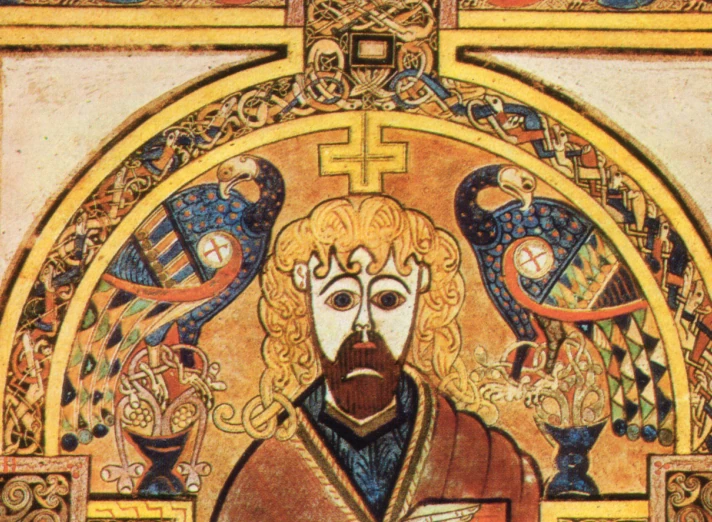
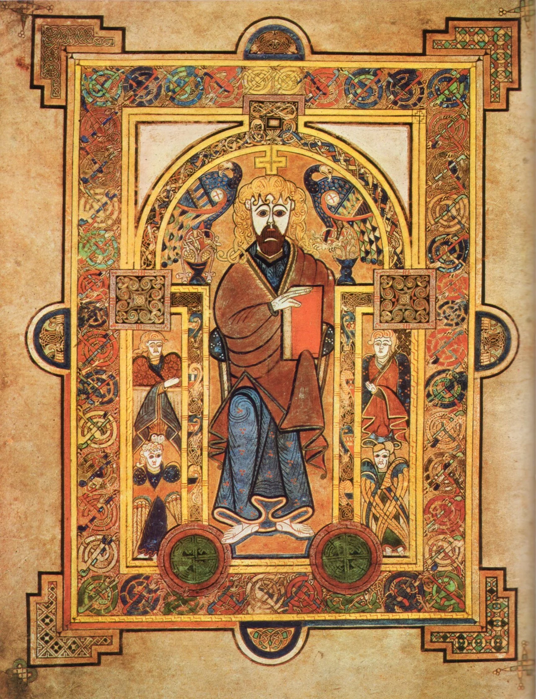
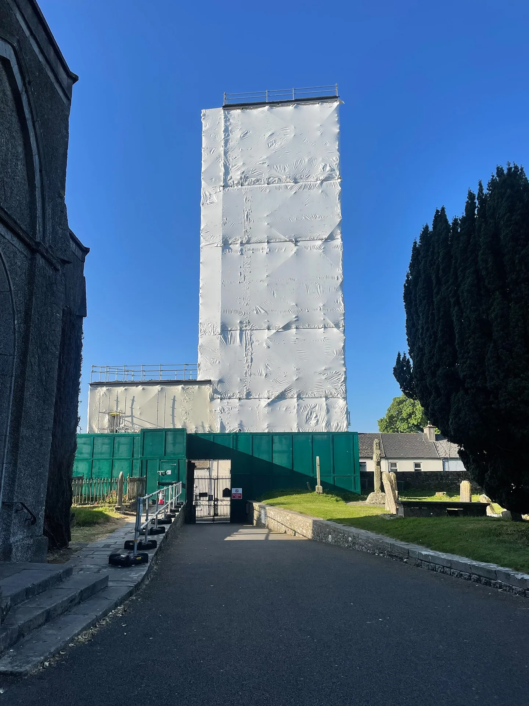
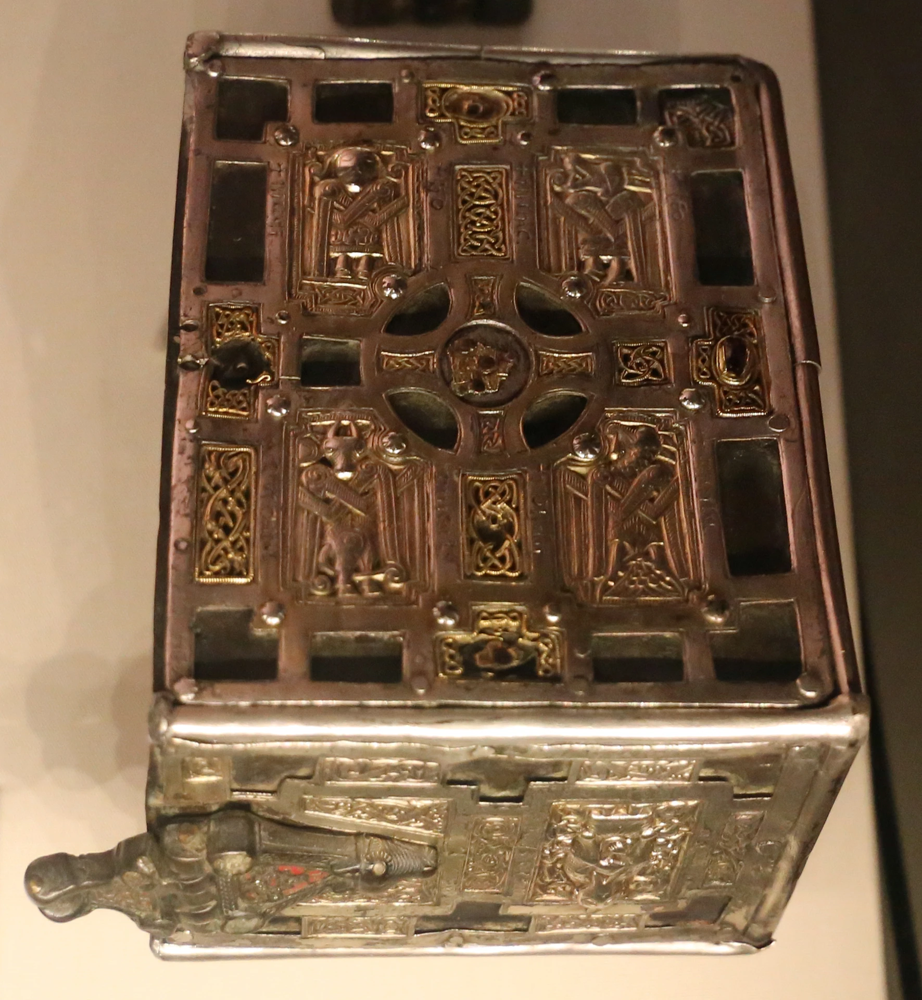
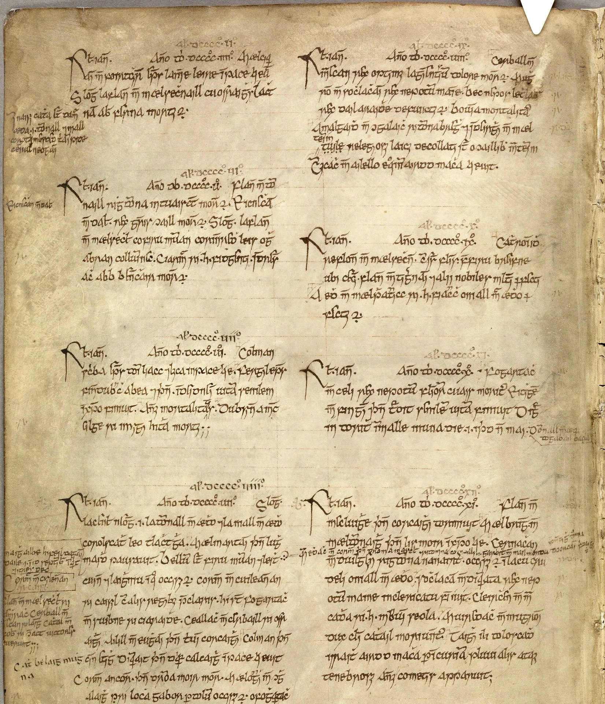
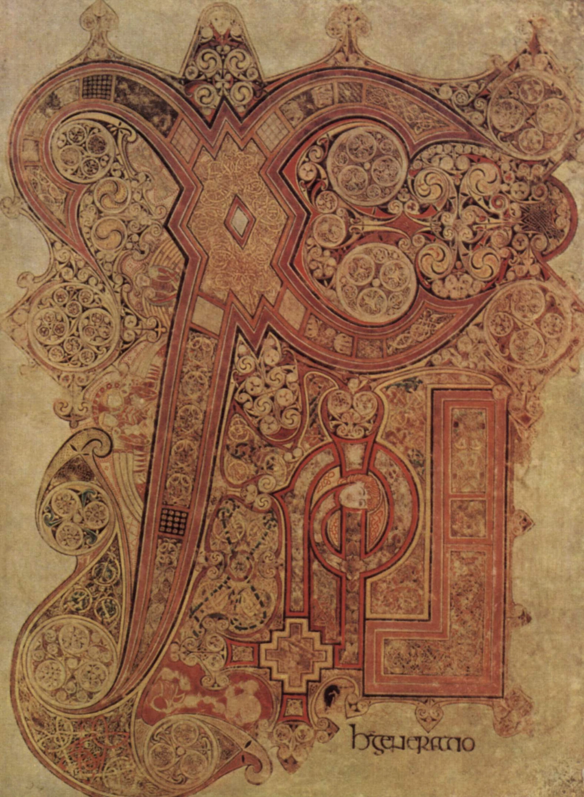

아직 펼치지 않은 카드손으로 그린 말씀 · 1켈스의 서1,200년 전 수도사들이 송아지 가죽에 그린 그리스도예요. 머리 양옆의 새 두 마리는 무엇을 뜻할까요?그리스도 머리 옆에 공작새 두 마리가 있어! 찾아볼래?
807년 ~ 1007년아일랜드 미스주 켈스
켈스의 서
1007년 어느 밤, 켈스의 큰 돌 교회에서 금으로 꾸민 복음서가 사라졌어요. 두 달 스무 밤 뒤, 그 책은 금이 뜯긴 채 뗏장(풀이 붙은 흙덩이) 아래에서 나왔어요. 다시 찾은 책을 등불로 비추며, 금 덮개보다 오래 남은 것을 찾아보세요.
옛날에 도둑이 아주 귀한 책을 훔쳐 갔대. 금은 떼어 가고, 책은 흙덩이 밑에서 다시 찾았대. 등불을 들고 책 속에 숨은 동물을 찾아볼까?
검수 전 시안이에요(기준서 1판). 1007년의 일은 아일랜드 연대기 두 권에 짧게만 남아 있어 기록 그대로 옮기고, 서로 다른 점은 ‘기록마다 다른 점’에 적었어요. 연대기의 ‘콜룸 킬레의 큰 복음서’를 켈스의 서로 보는 것은 학자들의 흔한 생각이에요. 상상은 ‘눈 감고 상상해 보기’에만 썼어요.
시안 확인용카드 단계 미리 보기
1
켈스의 큰 책
앞면의 「옥좌의 그리스도」(임금 자리에 앉은 그리스도)가 있는 이 책은 아일랜드 미스주의 수도원 마을 켈스(Kells)에서 ‘켈스의 서(책)’라는 이름을 얻었어요. 켈스는 옛 아일랜드 말로 ‘케난나스’(Cenannas)라고 불렀어요.
아일랜드의 옛 기록 『얼스터 연대기』는 807년에 이곳에 ‘콜룸 킬레의 새 수도원’을 지었다고 적었어요. 콜룸 킬레(Colum Cille)는 스코틀랜드 아이오나섬에 수도원을 세운 6세기 수도사, 성 콜룸바의 아일랜드 이름이에요. 878년에는 아이오나섬에 있던 콜룸바의 유해(남은 뼈)도 켈스로 옮겨 왔어요(아일랜드 공공사업청).

사진은 2025년 5월의 켈스 둥근 탑이에요. 옛 수도원 터에 남은 탑으로, 지금은 보수 공사로 하얀 천에 싸여 있어요. 오른쪽 풀밭에 돌십자가가 보여요.
아일랜드의 작은 마을 켈스에 수도원이 있었대.
물어보기하얀 천에 싸인 탑은 천 년 동안 무엇을 보았을까?
2
금 덮개
1007년 어느 밤, 이 복음서가 켈스의 큰 돌 교회 서쪽 성물실에서 사라졌어요. 성물실은 예배에 쓰는 거룩한 물건을 두는 방이에요. 연대기는 누군가 ‘못되게’ 훔쳐 갔다고 적었어요.
연대기는 이 책을 이렇게 불렀어요.

“서방 세계에서 가장 귀한 보물이었다. 사람이 꾸민 덮개 때문에.”
『얼스터 연대기』 1007년(U1007.11) · 영어 번역(CELT)을 이 안내서가 우리말로 옮김
연대기가 말한 덮개는 책을 넣은 금속 함이에요. 아일랜드에서는 성인(거룩한 사람)의 복음서를 금속으로 만든 함, ‘쿰다크’(cumdach)에 넣어 모셨어요. 사진은 같은 무렵인 1001~1025년에 꾸민 다른 복음서의 함이에요. 데버니시섬의 ‘몰라이스 복음서 함’으로, 남아 있는 쿰다크 가운데 가장 오래되고 가장 작아요(높이 14.75cm). 켈스의 서를 넣었던 함은 아니에요.
이 함은 지금 아일랜드 국립박물관에 남아 있지만, 안에 있던 책은 사라졌어요. 켈스의 복음서는 그 반대가 돼요.
도둑이 반짝이는 금 상자 때문에 책을 훔쳐 갔대.
물어보기도둑은 책이 좋았을까, 금이 좋았을까?
3
두 달 스무 밤
그 뒤의 일을 같은 연대기가 이어서 적었어요.

“두 달 스무 밤 뒤에 되찾았다. 금은 뜯겨 나갔고, 그 위에 뗏장이 덮여 있었다.”
『얼스터 연대기』 1007년(U1007.11) · 영어 번역(CELT)을 이 안내서가 우리말로 옮김
뗏장은 풀이 뿌리째 붙은 흙덩이예요. 금 덮개는 사라졌지만, 책은 흙덩이 아래에서 다시 나왔어요.
사진은 이 연대기의 한 쪽이에요(902~913년 대목). 해마다 ‘1월 초하루’를 뜻하는 큰 K 글자로 시작해, 그해의 일을 몇 줄씩 적었어요. 이 연대기 사본은 15세기 말에 옮겨 적은 것으로, 지금 트리니티 칼리지에 있어요.
두 달하고 스무 밤이 지나서, 흙덩이 밑에서 책을 찾았대!
물어보기두 달 동안 흙 속에 있던 책은 어떻게 됐을까?
4
등불로 비추기
다시 찾은 책을 펼쳐 볼까요? 예수가 태어난 이야기가 시작되는 34째 장의 앞면(34r)이에요(마태복음 1장 18절). 그리스도를 뜻하는 그리스어 첫 글자 X(키)와 P(로)가 쪽을 거의 다 채워서 ‘키로 쪽’이라고 불러요.
글자 안팎에는 아주 작은 생물과 얼굴이 숨어 있어요. 트리니티 칼리지 해설은 중세 필경사(책을 베껴 쓰던 사람)의 밝은 눈이나 오늘의 꼼꼼한 관람객이라야 찾는다고 해요. 손가락이나 마우스로 문질러 등불을 비춰 보세요.
어두운 키로 쪽을 손가락이나 마우스로 문질러 등불을 비춰 보세요. 숨은 곳이 다섯 군데 있어요.

켈스의 서 34째 장 앞면(34r) ‘키로 쪽’, 800년 무렵 · 그림: 『켈스의 서』 34r쪽 · 퍼블릭 도메인(요크 프로젝트) · 위키미디어 공용
빛이 닿으면 숨은 표시가 나타나요.
다섯 곳을 다 비췄어요. 금 덮개는 사라졌지만, 책 속 작은 생물들은 1,200년 넘게 그 자리에 있어요.
이 책은 큰 예식 때 펼쳐 보이던 책이었을 거래요(트리니티 칼리지). 해설은 나방 두 마리도 X의 왼쪽 위 팔 아래에 숨어 있다고 해요. 한 번 더 찾아보세요.
커다란 X 글자 속에 고양이, 쥐, 수달이 숨어 있대!
물어보기고양이는 쥐를 잡을까, 그냥 지켜볼까?
눈 감고 상상해 보기
비 그친 들판, 젖은 흙냄새가 나요. 누군가 풀이 덮인 흙덩이를 조심스레 들어 올려요. 그 밑에 금이 뜯겨 나간 책 한 권이 놓여 있어요. 손끝으로 흙을 털어 내자, 붉고 노란 글자가 어둠 속에서 살짝 비쳐요.
눈을 감아 봐. 축축한 풀밭에서 누가 흙덩이를 살짝 들어 올려. 그 밑에 아주 귀한 책이 있어!
나의 자리
한 장에 몇 달을 바친 정성처럼, 내가 오래 공들여 온 한 가지는 무엇인가요?
가장 오래 공들여 만든 작품이 있어?
마음에 닿는 한 줄을 고르거나 직접 써 보세요. 한 줄을 남기면 이 자리의 도장이 찍혀요. 이 기기에만 저장돼요.
더 깊이
이야기를 보다 궁금해질 만한 것들이에요. 답을 읽거나 짧은 영화로 보세요.
‘켈스에서 이름을 얻었다’는 건, 다른 데서 만들었다는 뜻이에요?
‘가장 귀한 보물’이었는데, 도둑은 왜 금만 가져갔어요?
뒷이야기
아직 펼치지 않은 이야기예요. 누르면 이야기가 펼쳐지고 색이 돌아와요. 더 알고 싶으면 근거를 따라가 보세요.
다 펼치면, 다음에 오실 때 새 이야기가 찾아와요.
오늘의 뒷이야기는 여기까지예요. 다음에 오시면 새 이야기가 기다리고 있어요.
펼친 뒷이야기 · 누르면 다시 볼 수 있어요
더 찾아보기
기록마다 다른 점
두 달 스무 밤인가, 석 달인가 『얼스터 연대기』는 두 달 스무 밤 만에 되찾았다고 하고, 『스코트족 연대기』(Chronicon Scotorum)는 석 달 뒤 금과 은이 떼어진 채 뗏장들에 덮여 찾았다고 해요. 없어진 곳도 ‘서쪽 성물실’과 ‘큰 돌 교회에 붙은 방’으로 조금 달라요.
그 복음서가 켈스의 서일까 두 연대기 모두 ‘콜룸 킬레의 큰 복음서’라고만 적었어요. 학자들은 흔히 이 책을 켈스의 서로 보지만, 연대기에 그 이름이 나오지는 않아요.
무엇 때문에 귀했을까 연대기가 이 책을 귀하게 여긴 까닭을 영어 번역(CELT)은 ‘사람이 꾸민 장식 때문에’로, 다른 번역은 ‘공들여 만든 함 때문에’로 옮겨요.
1007년인가, 1006년인가 이 카드는 『얼스터 연대기』의 1007년 대목을 따랐어요. 트리니티 칼리지 도서관과 코크 대학 전시는 도둑맞은 해를 1006년이라고 해요. 연대기의 영어 번역(CELT)도 이 대목의 해를 ‘1006년, 또는 1007년’으로 적어요.
어디서 만들었을까 트리니티 칼리지 도서관은 아이오나섬의 필사실에서 만들었다는 것이 학자들의 많은 의견이라고 하면서도, 잉글랜드 북쪽 노섬브리아나 스코틀랜드 동쪽 픽트족의 땅으로 보는 주장도 있다고 적어요. 아이오나에서 다 만들었는지, 켈스에서 마쳤는지, 두 곳에서 나눠 만들었는지도 몰라요.
언제 트리니티 칼리지에 왔을까 트리니티 칼리지 도서관은 1653년 무렵 더블린으로 보낸 책이 몇 해 뒤 1661년에 대학에 왔다고 하고, 코크 대학 전시는 1653년에 더블린으로 가져와 트리니티 칼리지에 맡겼다고 해요.
함께 읽는 말씀
말씀은 뜻만 옮기고, 본문은 대한성서공회 개역개정으로 이어 드려요.
마태복음 1장 18절 예수 그리스도가 태어난 이야기가 시작되는 구절이에요. 키로 쪽이 바로 이 구절을 열어요. 앞의 1~17절은 아브라함부터 이어지는 족보예요.
직접 가 보기 · 집에서 보기
확인한 날 · 2026년 11월 18일 · 바뀌기 쉬운 정보라 정기적으로 다시 확인해요
켈스 수도원 터와 둥근 탑은 아일랜드 공공사업청(OPW)이 돌보는 국가 기념물이에요. 지금은 보수 공사로 닫혀 있다고 알려요. 옛 수도원 터에는 높은 돌십자가 다섯 기가 남아 있어요.
책은 더블린 트리니티 칼리지에 있어요(앞면 ‘알고 보면’). 집에서는 트리니티 칼리지 디지털 컬렉션에서 쪽마다 넘겨 볼 수 있어요.
키로 쪽의 다섯 곳 금박
등불로 키로 쪽을 비춰 숨은 다섯 곳을 모두 찾으면 카드에 금박이 입혀져요.
키로 쪽을 끝까지 비춰 보기
아이와 함께 채색
아이와 함께 ‘영화처럼 보기’를 끝까지 보면 카드가 채색돼요.
아이와 함께 ‘영화처럼 보기’를 끝까지 보기
근거 보기 (30)
- 트리니티 칼리지 도서관: The Book of Kells(2021년 8월 18일 고침) — 800년 무렵, 아이오나 필사실이 학자들의 다수 의견(노섬브리아 · 픽트족 땅이라는 주장도), 806년 바이킹 습격으로 공동체 68명이 죽고 켈스의 새 수도원으로 피함, 아이오나 · 켈스 어디서 마쳤는지 모름, 1006년 꾸민 함(쿰다크) 때문에 도둑맞음, 중세 내내 켈스에, 1641년 반란 뒤 폐허, 1653년 무렵 캐번 백작이 더블린으로, 헨리 존스(크롬웰 군대의 전 정찰 총감 · 부총장 · 1661년 미스의 주교)를 거쳐 트리니티 칼리지로, 화가 셋 · 필경사 넷, 벨럼 340장 · 330 × 255mm · 19세기에 잘라 내고 금칠, 인디고나 대청의 파랑 · 청금석은 아마 쓰지 않음 · 웅황의 노랑, 30장쯤 사라짐 · 마가와 누가의 초상 없음, 불가타(384년)에 옛 라틴어 번역의 읽기를 섞음
- C. Ní Ghormáin, Folios 310v – 311r, Gospel of John(Visit Trinity, 2024년 8월 8일) — 공작은 고기가 썩지 않는다는 믿음에서 그리스도의 썩지 않음을, 해마다 꼬리 깃이 빠지는 것은 부활을 뜻함
- Visit Trinity: The stunning use of peacocks in the Book of Kells(트리니티 칼리지, 2018년 10월 8일) — 공작은 줄 끝 · 캐논 표 · 그리스도 그림 곁에, 고기가 썩지 않는다는 옛 믿음에서 그리스도의 썩지 않음 · 죽지 않음을 뜻한다고 봄
- 아우구스티누스, 『신국론』 21권 4장(NPNF 영어 번역) — 카르타고에서 구운 공작 가슴살 한 점을 남겨 둠, 다른 고기가 썩을 만큼 지나도 냄새가 없고 서른 날 넘게 그대로, 한 해 뒤 조금 쪼그라들고 마름
- 가톨릭 백과사전(1907): St. Augustine of Hippo — 북아프리카 히포의 주교
- 『얼스터 연대기』 U806.8(CELT) — 이 공동체 사람 68명이 이교도에게 죽임을 당함
- 가톨릭 백과사전(1908): St. Columba(C. Edmonds) — 521년 도니골 가튼, 콜룸은 비둘기, 콜룸 킬레는 ‘교회들의’, 563년 열두 동료와 가죽 씌운 고리버들 배, 5월 12일 아이오나, 손으로 책 300권을 썼다고 전함
- 스미스소니언 국립 아시아 미술관: The Stockholm Codex Aureus(M. P. Brown) — 8세기 중엽 켄트, 11r 키로 쪽, 앨프레드와 웨르부르크가 바이킹 군대에 값을 치름, 9세기 중엽 키로 쪽 여백의 옛 영어 글, 캔터베리 그리스도 교회
- 케임브리지 eSawyer S 1204a — ‘우리의 순금으로’ 이교도 군대에게서 얻음, 그리스도 교회에 주고자 함
- 퍼매나 · 오마 박물관 소장품 FCM_2008_001: 몰라이스 복음서 함(19세기 전기 도금 복제품) — 본래 함은 11세기, 앞면의 네 복음서 기자 상징(사람 · 사자 · 송아지 · 독수리)
- 브리태니커: Woad — 대청은 겨잣과의 풀, 마른 잎을 적셔 띄우면 파란 인디고틴
- 브리태니커: Chi-Rho(sacred monogram) — ΧΡΙΣΤΟΣ의 첫 두 그리스 글자를 겹친 표시, XPI는 많은 필사본에서 그리스도를 나타냄
- 가톨릭 백과사전(1909): Symbolism of the Fish(M. Hassett) — 익투스는 ‘예수 그리스도, 하나님의 아들, 구원자’의 첫 글자, 성찬 그림의 빵과 물고기
- Visit Trinity: The role of cats in the Book of Kells(트리니티 칼리지, 2018년 10월 25일) — 먹을 것을 지키려고 고양이를 길렀을 수 있음, 쥐 잡는 고양이 그림, 9세기 수도사의 시 「팡구르 반」
- 영국 도서관 소장 목록: Cotton MS Nero D IV(린디스판 복음서) — 700년 무렵 잉글랜드(아마 린디스판 수도원), 29r 키로 쪽, 10세기 앨드레드의 옛 영어 뜻풀이
- E. Harrington, The Book of Kells: Image and Text / Introduction(코크 대학 중세사 석사 학생 전시, 2017년 5월 29일) — 1006년 도둑맞고 두 달 뒤 뗏장 아래에서 찾음, 1653년 더블린 트리니티 칼리지로, 제임스 어셔가 ‘켈스의 서’라는 이름을 붙였다고 봄, 340장, 60장쯤 사라짐
- 『얼스터 연대기』 U1007.11(CELT 영어 번역) — 콜룸 킬레의 큰 복음서, 밤에 못된 짓으로 도둑맞음, 케난나스 큰 돌 교회의 서쪽 성물실, 사람이 꾸민 장식 때문에 서방 세계에서 가장 귀한 보물, 두 달 스무 밤 뒤 되찾음, 금이 뜯기고 뗏장이 덮임 · 재벌에서 다시 확인: 해 머리 ‘AD 1006 alias 1007’
- 『얼스터 연대기』 U807.4(CELT) — 케난나스에 콜룸 킬레의 새 수도원을 지음
- 『스코트족 연대기』 CS1007(CELT) — 큰 돌 교회에 붙은 방에서 도둑맞음, 석 달 뒤 금과 은이 떼어지고 뗏장들에 덮인 채 찾음
- 아일랜드 공공사업청(Heritage Ireland): Kells Monastic Site — 6세기 중반 콜룸바가 세움(전함), 878년 아이오나에서 유해를 옮김, 둥근 탑의 첫 기록 1076년, 높은 십자가 다섯, 국가 기념물, 보수 공사로 닫힘(2026-11-18 확인) · 재벌(2026-11-22)에서 더 확인: 첫 기록 1076년 타라의 왕 무르하드 오멜러글린이 여기서 살해됨, 다섯 층, 원뿔 지붕 없음, 문은 땅에서 1.5m 위, 꼭대기 창 다섯
- C. Brady, Symbolism in the Book of Kells: the Chi Rho page(Visit Trinity, 2024년 12월 13일) — 34r 키로 쪽, 예식 때 펼쳐 보인 책, 필경사의 눈과 꼼꼼한 관람객, 수달과 물고기(성찬), 고양이와 쥐(성찬 빵), 천사 셋과 하나, X의 왼쪽 위 팔 아래 나방 둘, 붉은 소용돌이 안의 그리스도 얼굴
- E. Harrington, The Book of Kells: Image and Text / The Chi Rho Page(코크 대학 중세사 석사 학생 전시, 2017) — 마태복음 1장 18절 Christi autem generatio, 성찬 빵을 갉는 쥐 둘과 고양이, 고양이 위에 앉은 쥐 둘, 검은 수달
- Art & Theology: Christmas, Day 7 — 34r ‘Christi autem’ 쪽, 오른쪽 아래 h generatio(h는 autem의 줄임)
- 트리니티 칼리지 도서관: The Old Library and the Book of Kells — 켈스의 서 전체를 디지털 컬렉션에서
- Wikipedia: Soiscél Molaisse — 길잡이(8세기 나무 상자를 1001~1025년 수도원장 켄파엘라드 때 꾸밈, 남은 쿰다크 가운데 가장 오래되고 가장 작음 14.75cm, 아일랜드 국립박물관)
- Irish Pictures(1888, Royal Irish Academy) — 몰라이스 복음서 함: 새긴 글로 켄파엘라드가 수도원장일 때(1001~1025) 만든 것을 앎, 청동판에 은판 · 재벌에서 다시 확인: 앞면 가운데 원 안의 십자가를 네 복음서 기자의 상징이 둘러쌈
- Wikipedia: Cumdach — 길잡이(아일랜드 말로 ‘덮개’, 대부분 아일랜드 국립박물관, 몰라이스는 함만 남고 책은 사라짐)
- Wikipedia: Book of Kells — 길잡이(‘콜룸 킬레의 큰 복음서’를 켈스의 서로 흔히 봄, 덮개를 뜯어낸 힘이 앞뒤의 빠진 장과 이어질 수 있음)
- Literary Hub: A Pilgrimage to the World’s Most Famous Manuscript — 1007년 도둑맞은 일의 기록은 얼스터 연대기 하나, 그 연대기 원본도 트리니티 칼리지에
- 대한성서공회 개역개정: 마태복음 1장
그림·사진·소리 출처
- 사진: Eirian Evans · CC BY-SA 2.0 · 위키미디어 공용
- 사진: Sailko · CC BY 3.0 · 위키미디어 공용
- 필경사 루어리 오 루이닌(15세기) · 퍼블릭 도메인 · 위키미디어 공용
- 그림: 『켈스의 서』 34r쪽 · 퍼블릭 도메인(요크 프로젝트) · 위키미디어 공용
- 그림: 『켈스의 서』 32v쪽 「옥좌의 그리스도」(800년 무렵) · 퍼블릭 도메인 · 위키미디어 공용
- 그림: 『켈스의 서』 32v쪽 「옥좌의 그리스도」(800년 무렵) · 퍼블릭 도메인 · 위키미디어 공용
- 사진: Sailko · CC BY 3.0 · 위키미디어 공용
- 그림: 『켈스의 서』 34r쪽 · 퍼블릭 도메인(요크 프로젝트) · 위키미디어 공용
- 그림: 『켈스의 서』 34r쪽 · 퍼블릭 도메인(요크 프로젝트) · 위키미디어 공용
- 그림: 『켈스의 서』 34r쪽 · 퍼블릭 도메인(요크 프로젝트) · 위키미디어 공용
- 그림: 『켈스의 서』 34r쪽 · 퍼블릭 도메인(요크 프로젝트) · 위키미디어 공용
- 그림: 『켈스의 서』 32v쪽 「옥좌의 그리스도」(800년 무렵) · 퍼블릭 도메인 · 위키미디어 공용
‘처음 만나는 기독교 문화’의 깊은 카드예요. 카드 단계와 남긴 글은 이 기기에만 저장돼요.